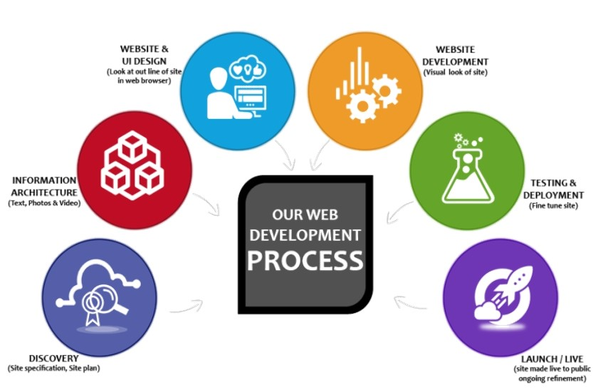

Typy webových aplikací
Vícevrstvé webové aplikace
- Díky pokročilým webovým technologiím je možné realizovat webovým prostředím stále složitější a komplexnější aplikace, včetně informačních systémů, cloudových služeb apod.
- Současné webové aplikace jsou strukturovány do více vrstev, tradičně se uvádějí tři základní vrstvy:
- Funkci prezentační vrstvy plní zpravidla webový prohlížeč.
- Logickou vrstvu představují technologie na dynamické generování webových stránek (PHP, ASP.NET, JSP apod.), jež se nejčastěji zpracovávají na straně webového serveru.
- Datovou vrstvu mohou tvořit databáze umístěné na databázovém serveru, ale zdrojem dat mohou být také datové soubory nebo internetové služby.
{kind=link}
MVC (Model-View-Controller)
- Architektura moderních webových aplikací velmi často vychází z návrhového vzoru (design pattern), označovaného zkratkou MVC (představuje první písmena slov model, view, controller).
- Základní myšlenkou MVC architektury je oddělení aplikační logiky od výstupu.
- Snaží se vyřešit problém tzv. "spaghetti" kódu, typickém zejména pro starší webové aplikace psané v jazyce PHP. Udržování a rozšiřování takových aplikací je velmi náročné, obtížná je i týmová spolupráce.
- V pojetí MVC je aplikace přehledně rozdělena na komponenty tří typů:
- Model obsahuje logiku aplikace, k níž můžeme zařadit výpočty, databázové dotazy, validace a podobně. Jeho úkolem je podle zadaných parametrů zpracovat určitá vstupní data a připravit z nich data výstupní. Nerozhoduje o tom, jak bude se výstupními daty nakonec naloženo, jak budou zformátována a vypsána; model je zcela oddělen od výstupu.
- View (pohled) má na starost zobrazení výstupu dat, která mu byla předána. Může jít o pohled v podobě výpisu dat (sestavy), ale také o pohled s formulářem. Nejčastěji se k tvorbě pohledů používají tzv. šablonovací systémy, které umožňují do šablony, jejíž rámec tvoří HTML stránka, vkládat do symbolických bloků proměnné i různé příkazy. Šablony se mohou vzájemně kombinovat a doplňovat - může např. existovat určitá výchozí šablona s layoutem stránek, kterou využívají a doplňují další šablony.
- Controller zprostředkovává komunikaci mezi klientem, modelem a pohledem. Každá entita mívá svůj vlastní controller - UserController, ArticleController atd.
- Životní cyklus stránky zahajuje uživatel, který zadá do prohlížeče adresu webu a parametry: http://www.server.com/article/detail/5 Požadavek zpracuje neprve router, který podle zadaných parametrů zajistí jeho přesměrování na správný router. V tomto případě bude volán ArticleController a budou mu předány parametry view a 5. Controller na základě parametrů provede příslušné akce: zavolá model, jehož úkolem je v databázi najít článek s id 5, a získaná data poté controller předá pohledu (view) s názvem detail. Data jsou vložena na určené místo v šabloně a pohled je vyrenderován.
Fáze návrhu webové aplikace
- Strategie. Hledání kompromisu mezi potřebami uživatelů budoucí aplikace a zájmů tvůrců aplikace. Je třeba zjistit a pochopit cílovou skupinu uživatelů, jejich způsob uvažování a zvyky, zohlednit je v návrhu aplikace.
- Specifikace požadavků. Na základě získaných informací jsou specifikovány všechny funkce a možnosti, jež by měla aplikace a její GUI pokrývat. Výsledkem by měl být dokument s popisem požadovaných funkcí a forem obsahu.
- Návrh struktury. V této fázi se řeší tzv. interakční design; pomocí Use Case diagramů (případu užití) se zobrazují vazby mezi jednotlivými částmi aplikace a akce, které bude uživatel moci provádět, včetně možných reakcí aplikace. 
{kind=link}
- Základní model a kostra. V této fázi se řeší tzv. informační design (jak prezentovat informace generované aplikací, aby došlo k jejich správnému pochopení), interface design (výběru jednotlivých druhů GUI komponent k provedení určité činnosti) a design navigace (jak se budou v prostředí aplikace pohybovat uživatelé). Celkový pohled lze získat sdružením poznatků a vytvořit drátěný model uživatelského rozhraní - wireframe. Jeho cílem je určit hlavní části aplikace a ilustrovat jejich přibližné rozmístění (schématické obrázky, v nichž jsou potlačeny detaily vzhledu GUI komponent i obsahu).
- Vizuální vzhled. Webdesignéři připravují vizuální vzhled jednotlivých komponent stránky podle vytvořených wireframů a storyboardů. Na základě grafického manuálu vznikají barevná schémata, která budou v aplikaci použita, jsou vybírány typy písem a vytvářen graficky homogenní vzhled všech komponent.
- Testování. Může probíhat v uzavřené skupině i v testovacím provozu aplikace pomocí speciálních analytických nástrojů pro web (analýzy návštěvnosti, teplotní mapy, sledování pohybů myši a kliknutí, nahrávání uživatelské aktivity atd.).
Bezpečnostní rizika webových aplikací
- Cross-site scripting (XSS) je metoda narušení WWW stránek využitím bezpečnostních chyb ve skriptech (především neošetřené vstupy).
- Útočník díky těmto chybám v zabezpečení webové aplikace dokáže do stránek podstrčit svůj vlastní javascriptový kód, což může využít buď pouze k poškození vzhledu stránky, jejímu znefunkčnění, získávání citlivých údajů návštěvníků stránek nebo obcházení bezpečnostních prvků aplikace. Obrana:
- V textech zadávaných uživateli je třeba speciální znaky nahrazovat entitami, např. < nahrazovat za <.
- Cross-site request forgery (XSRF) je pasivní útok, kdy útočník nachystá na nějakou stránku kód, který způsobí vyvolání URL na nějakém jiném serveru, kde uživatel může být stále přihlášen. Obrana:
- Důležité akce (třeba převod peněz) je třeba potvrzovat, do přihlašovacích formulářů je třeba přidávat náhodně generované hodnoty.
- Používat autorizační token – náhodně vygenerovaný řetězec pro danou akci a pro aktuálního uživatele.
- Clickjacking. Cizí stránka, na kterou je veden útok, je zobrazena na útočníkově stránce v iframe tak, že je vidět jen část bez bližšího kontextu. (Je možné využít i opacity v CSS.) Uživatel je naveden ke kliknutí na tuto část stránky, čímž provede nějakou akci, například hlasování v anketě. Obrana:
- Lze se bránit hlavičkou X-Frame-Options, která je v některých prohlížečích podporována, a Javascriptem. Princip spočívá v zabránění zobrazení stránky v rámci.
- Session hijacking je útok, při kterém útočník odposlechne cookie použité pro označení úspěšně autentizovaného uživatele, a začne se za něj vydávat. Obrana:
- Session cookies musí mít označení secure, tedy mohou být poslána jen přes šifrovaná SSL spojení.
- V případě předávání session ID přes URL je obrana komplikovanější, vyžaduje zabránit úniku URL přes referer (odkazy, obrázky, ...) a Session fixation.
- Phishing je aktivní útok využívající sociální inženýrství, při kterém útočník vydává svoje vlastní webové stránky za oficiální stránky instituce / aplikace, aby získal přihlašovací údaje uživatele. Obrana:
- Vzdělávání uživatelů v kontrole autentizace serveru, použití Extended Validation SSL Certificates.
- SQL Injection technika napadení databázové vrstvy programu vsunutím (odtud „injection“) kódu přes neošetřený vstup a vykonání vlastního pozměněného SQL dotazu. Obrana:
- Důsledné používání tzv. PreparedStatement a jeho setXXX() metod pro nastavování hodnot.
- Tam kde se nejedná o hodnotu (třeba název sloupce v ORDER BY), zkontrolovat vstup regulárním výrazem na očekávané hodnoty.
Redakční systémy a e-commerce
- Zkratkou CMS (Content Management System = systémy pro správu obsahu) je označován software, pro který se vžil častěji používaný název redakční systém.
- Jedná se zpravidla o komplexní webovou aplikaci používanou pro tvorbu a úpravu obsahu webu bez znalostí kódování.
- CMS tak může ušetřit náklady na aktualizaci obsahu webu, protože změny částí stránek může provádět i zaškolená obsluha bez znalosti kódu HTML, CSS či dalších technologií.
- Složitější CMS umožňují vkládání různých článků a spotů (včetně tabulek a obrázků) do předem určených kategorií, případně úpravu všech textů na webu.
- Používají se k tomu tzv. WYSIWYG editory, jejichž ovládání se velmi podobá ovládání běžných desktopových textových procesorů (např. MS Word), které fungují v internetových prohlížečích a v pozadí generují HTML kód.
- Vyspělé CMS dokáží přímo manipulovat se strukturou webu a s využitím různých přídavných modulů přizpůsobovat funkce redakčního systému konečnému záměru - s jejich pomocí je tak možné vytvářet weblogy, firemní stránky, elektronické obchody, zpravodajské portály atd.
{kind=link}
| CMS | Výhody | Nevýhody |
|---|---|---|
| WordPress | Cena, Šablony, Pluginy, Variabilita | Riziko napadení, Spam, Rychlost |
| Joomla! | Správa velkého množství obsahu, Pluginy, Velká komunita | SEO, Složitost, Neintuitivní administrace www stránky |
| Drupal | Flexibilný, Vhodný pro větší webové projekty | Složitost, Minimální množství bezplatných pluginů a grafických šablon |
E-COMMERCE
Pojem e-commerce je používán k označení různých obchodních transakcí realizovaných prostřednictvím Internetu a dalších elektronických prostředků. Podle cílové skupiny rozlišujeme několik typů e-commerce:
- B-2-B (Business to Business, obchodník obchodníkovi). Většinou fungují na principu elektronické výměny dat (objednávek, faktur). Vyšším stupněm jsou internetová tržiště pro zprostředkování obchodů. Nejvyspělejší variantou jsou komunikační a distribuční sítě, kde dochází k transakcím v reálném čase, včetně finančních a logistických operací.
- B-2-C (Business to Consumer, obchodník zákazníkovi). Na základní úrovni je to webová stránka plnící funkci elektronického katalogu, doplněná případně o interaktivní formuláře s možností zpětné vazby. Nejvyšší úrovní je internetový obchod s možností online plateb.